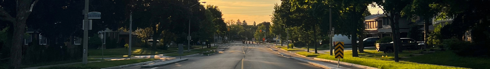

Working at Zinite! April 30 - December TBD
Working at a stealth start up that specializes in new transistor technologies.
I'm super happy with this opportunity. I think this experience puts me on another level in terms
of work ability. I feel that working here helped me grow a bunch, more than working at a tech startup
in america. I feel like I would erode in Cali, the land of fakes. But Alberta/Texas are full of down to
Earth people
Learning a lot on collaboration and being an effective communicator. At a big company, it's
easy to hide and clockin-clock out and just do your job stellarly. At a startup, you have to
contribute to the culture and try to develop the environment just as much as the work you do.
Everyone at a startup has to stand out, otherwise the startup will erode. I had to make my mark
somehow. This was hard. At a startup,
I frequently felt I wasn't doing enough to further the company and this pressure was GREAT!
Also, being in Edmonton, Alberta, I got to experience the highest GDP per capita in Canada.
Food was definitely cheaper with the 5% tax and in general. People were spending more money.
Studying 3A term of Mechatronics Engineering! Jan 5 - April 23.
Working as an Undergraduate research Assistant in Prof. Chrystopher Nehaniv's lab. Waterloo
Algebraic Intelligence and Computation Lab (WAICL). This has been a long time coming...
Achieving my dreams of pursuing math and control theory.
Some of the smartest people I've had the privilege of meeting!!
Grapht theory (4CT, Kuratowski's) and Abstract algebra (transformation semigroups, automata, algebraic decomposition)
for algebraic intelligence, neuro symbolic ai.
Studying 2B term of Mechatronics Engineering! Sept 3 - Dec 15.
Working as an Undergraduate research Assistant in Prof. Kevin Musselman's lab
with PhD Silas Ifeanyi. Got coauthored!
Switched streams and met a new cohort of Tron 28. Very interesting.
Doing a back to back coop at Teledyne Dalsa with Naeem Altaf.
Working as a hardware design and test coop. Designing circuit schematics for a sensor test board that
tests X RAY imaging sensor dies at high temp 85 C and possible high humidity.
Studying 2A term of Mechatronics Engineering! Sept 6 - Dec 19.
Working as an Undergraduate Research Assistant where I am working on building a thermal controlled chamber for an IC/Chip test fixture.
The research is based on ultrasonic soldering which i a machine-based soldering method using ultrasonic waves to deoxidize and bond
metal-metal, e.g. aluminum-gold. This is used on chip to form connections, but when testing these chips the resistance based on the temperature
of the room plays a big part, as resistance is proportional to temperature. So i am working on keeping the temperature of the chip constant
when testing.
I incorporate MCUs, Solidworks CAD Modelling, electrical design,
parts sourcing, etc. to build this electromechanical project! Looking forward for cool projects further into the term!
joined Watonomous, a design team ot build an autonomous car, focused on the vehicle platform team where I work on
sensors and interfacing, + Linux, etc..
Studying 2A term of Mechatronics Engineering! Sept 6 - Dec 19.
Working as an Undergraduate Research Assistant where I am working on building a thermal controlled chamber for an IC/Chip test fixture.
The research is based on ultrasonic soldering which i a machine-based soldering method using ultrasonic waves to deoxidize and bond
metal-metal, e.g. aluminum-gold. This is used on chip to form connections, but when testing these chips the resistance based on the temperature
of the room plays a big part, as resistance is proportional to temperature. So i am working on keeping the temperature of the chip constant
when testing.
I incorporate MCUs, Solidworks CAD Modelling, electrical design,
parts sourcing, etc. to build this electromechanical project! Looking forward for cool projects further into the term!
joined Watonomous, a design team ot build an autonomous car, focused on the vehicle platform team where I work on
sensors and interfacing, + Linux, etc..
Competed at the 2024 1st Can American Club Crew Championships from July 25-28 2024. Winning Silver in 24U Mixed and Bronze in 24U Open at Welland, Ontario out of 14 teams! Lots of technical growth from me personally and as a team, creating everlasting memories and personal bests! Developed my technique, strength, and life skills with others! Fiery competition and insanely fast af.
Working as a Jr. Technical Analyst at the Ontario Ministry of Transporation where I get the privilege to get paid to learn a lot on web applications. I am developing the Photocard Comparison Technology for Driver's license Card Users that validates users and detects fraud. June 17 - Aug 30
Studying 1B term of Mechatronics Engineering! Jan 8 - April 25
First term at the University of Waterloo! Wednesday Sept 6... Living in V1 student residence. Studying 1A term of Nanotechnology Engineering!
Competed at the Canadian National Dragon Boat
Championships in July 20-23. Winning Gold in 18U Open, Silver
in 18U Mixed, and Bronze in 24U Open
at Welland, Ontario.
Competed at the World Dragon Boat Racing Championships in August 7-13.
Winning Gold in 18U mixed and Silver in 18U Open at Pattaya-Rayong,
Thailand. (Landed and stayed in Bangkok for a couple days,
my favourite city!!)
Graduated High School from Sir John A. Macdonald C.I.! Met a lot of great people, peers and teachers, in highschool! Learning was mid.
Competed at the Club Crew World Championships
in July 18-24. Winning Gold in 18U Open, Gold(2/3) & Silver (1/3)
in 18U Mixed
at Sarasota, Florida.
Competed at the Canadian National Dragon Boat in August 18-21.
Winning Gold in 24U Open at Montreal,
Quebec.
Competed at the Canadian National Dragon Boat in July 19-21. Winning Gold in 18U Open and 18U Mixed at Regina, Saskatchewan. I was a very bad paddler; Just began!